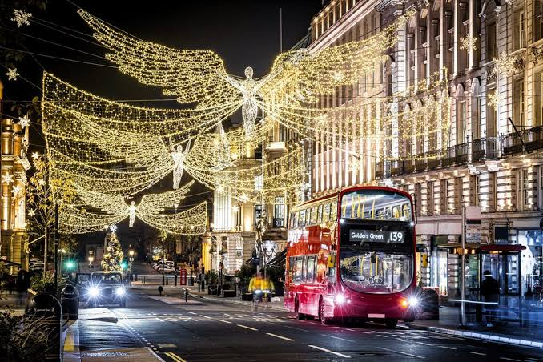

Embora a neve seja rara em dezembro na capital britânica, Londres compensa o frio úmido com uma das decorações natalinas mais elegantes do mundo. A cidade inteira se ilumina desde novembro, misturando a tradição dos corais nas praças históricas com grandes parques de diversões temáticos e pistas de patinação ao ar livre.
Projeto Desenvolvimento Web - Destino: Londres, Reino Unido